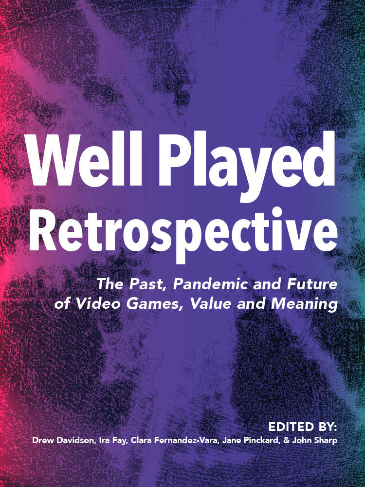
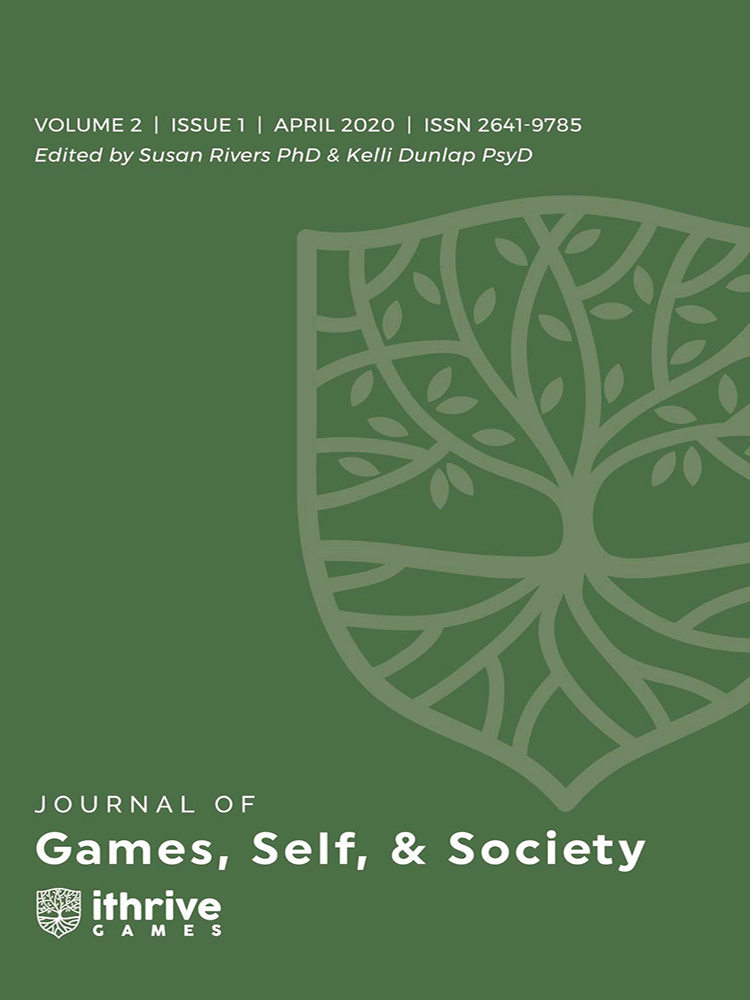

This is my most recently published paper. I co-authored it with three other people and in it we explore how the indie video game Spiritfarer defies typical media stereotypes of older adults and how this is a timely intervention during the COVID-19 pandemic.
Read it here!
Helping Grandma Home: Spiritfarer's Progressive Treatment of Older Adults During COVID-19

Well-Played: Spiritfarer, Age, Death, Peace, and a Pandemic
This is a recording of my presentation at the 2021 Games for Change Festival. It is a condensed version of my Spiritfarer paper above.
Experiential Depression and Anxiety Through Proceduralized Play: A Case Study of Fragile Equilibrium

This paper, on which I am a co-author, is my first published piece in a peer-reviewed journal. In it, we discuss how games can implicitly teach their players and then use the SHMUP game, Fragile Equilibrium, as a case study for this concept.
Read it here!
How The Little Prince can show Cuban generosity and abundance of love
While studying independent film and film criticism at the 2018 Sundance Film Festival, I co-wrote a review of the film Un Traductor after attending its screening and interviewing its directors. The review was published in Creative Loafing Tampa Bay.
Read it here!
The "New Man" Meets the Old: Postfeminist Masculinity in the Films of Brad Bird
This video essay, accompanied by a written paper, was the final project of my undergraduate film studies capstone course. In it, I make a claim for director Brad Bird's authorship by analyzing the depictions of masculinity in his films.